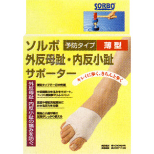

返回列表
产品名称：ソルボ 外反母趾・内反小趾サポーター 薄型

三進興産 ソルボ 外反母趾・内反小趾サポーター 薄型 左 Ｍ
メーカー 三進興産
JANコード 4961928633571
商品の特徴
足の痛みや変形が気になる方にお薦めです。筋肉に似た特性の衝撃吸収素材のソルボパットが圧力を分散し、しっかりサポートします。
外反母趾や内反小趾による痛みを防ぎ歩行を安定させます。
成分・分量
用法及び用量